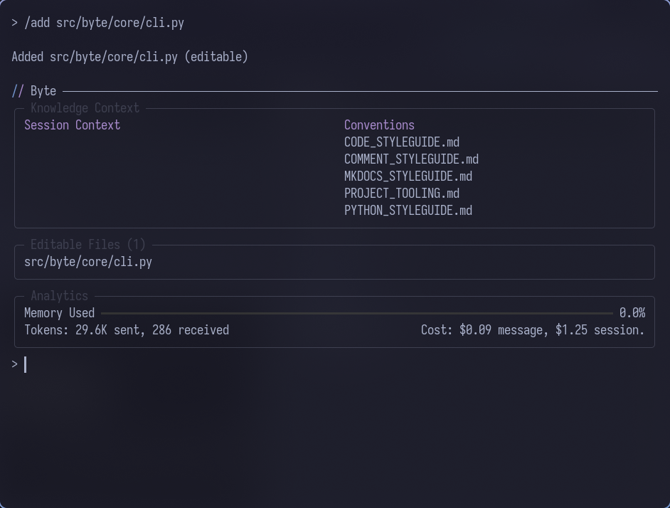

First Steps
Configure Byte and run your first session.
Prerequisites
Before running Byte:
- Git repository - Byte operates inside a git repository
- Good terminal - A modern terminal emulator with proper rendering support (like Kitty, Foot, WezTerm, or Alacritty)
- API key - One of these environment variables must be set:
ANTHROPIC_API_KEYfor Claude modelsGEMINI_API_KEYfor Google GeminiOPENAI_API_KEYfor OpenAI models
Configuration
Set Your API Key
Export the environment variable for your chosen provider:
Or create a .env file in your project root:
Navigate to Your Project
Byte runs from within a git repository:
Running Byte
Launch Byte from your project directory:
On first run, Byte's FirstBootService will guide you through initial setup:
- Choose LLM Provider - Select your preferred AI provider (Anthropic, Gemini, or OpenAI)
- Configure Web Commands - Automatically detects Chrome/Chromium for web scraping
- Enable File Watching - Optionally enable automatic detection of AI comment markers
- Setup .gitignore - Adds
.byte/cacheand.byte/session_contextpatterns
The service creates:
.byte/directory in your project rootconfig.yamlwith your selected configurationconventions/directory for project-specific coding standardscontext/directory for session contextcache/directory for temporary files
The .byte Directory
Byte creates a .byte/ directory containing:
- config.yaml - Configuration settings for model selection, tool availability, and behavior (see Settings Reference)
- cache/ - Temporary data and performance optimizations
- conventions/ - Project-specific style guides and coding standards that are automatically included in the AI's context
See the Conventions guide to learn how to define project-specific coding standards that Byte automatically includes in the AI's context.
Basic Usage
Adding Files to Context
The AI needs to know about files before suggesting changes:

Making Changes
Ask Byte to modify code:
Review the proposed changes, then approve or reject them.
Learn how to work with files in the AI's context - see File Context for details on adding, viewing, and removing files.